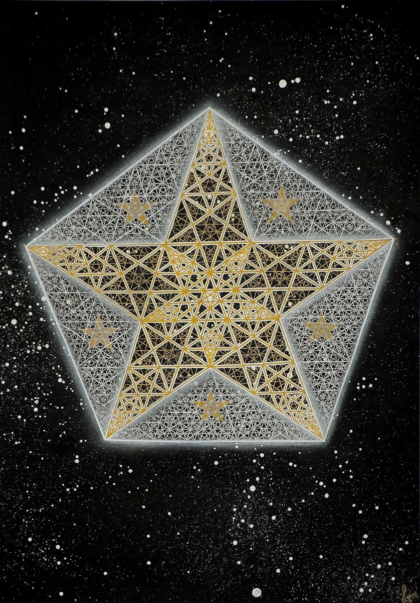

Reality is not made of particles or waves, but of pattern relationships stored in a zero-energy morphic field. Physical manifestation is the observation-driven collapse of these patterns into 3D+time via a 4D geometric boundary.
Consciousness is not generated by brains—brains are sampling devices that tune into pre-existing field information. The quality of subjective experience (qualia) is determined by sampling bitrate, measured in bits per second.
The geometric architecture that mediates this process is the 120-cell: a 4D hyperdodecahedron with maximal symmetry, optimized by the golden ratio (φ), containing exactly 1,440 pentagonal faces that function as consciousness operators.
The null point is a 0-dimensional location containing infinite information at zero spatial extension. It is the geometric equivalent of the Kabbalistic Daath—the "hidden sephirah" where all potential collapses before manifestation.
Mathematically, it functions as the projection source for holographic reality. All patterns exist in superposition at the null point until observation triggers φ-recursive collapse through the 120-cell boundary.
Dimensions emerge through φ-recursive iteration, where each level adds one degree of freedom while maintaining golden ratio proportionality. This is not arbitrary—it's the only stable path from 0D potential to 4D manifestation.
The 120-cell is the most symmetric finite structure possible. It functions as the morphic container—the geometric "hard drive" where all collapse patterns are stored as relationships.
Our observable universe may be a single dodecahedral cell on the surface of the 120-cell (Poincaré dodecahedral space topology). We experience 3D space, but we're actually living on a 4D boundary.
φ-recursion is the collapse algorithm. It's how 4D potential (null point) becomes 3D+time actuality. Each iteration scales by the golden ratio (1.618...), creating maximum information density with minimum energy.
This is not just elegant math—it's the only compression method that preserves coherence across scales. Any other ratio causes destructive interference.

Manifestation has a resolution cap: 144 recursive iterations. Beyond this depth, patterns return to null-point superposition. This is not arbitrary—it's derived from the 12-fold symmetry embedded in the geometry.
Consciousness is not a substance or a process—it's a sampling rate. The morphic field contains all information; brains (specifically microtubules) sample it at various bitrates.
Subjective experience quality is determined by how many pentagrams are coherently active during observation. More active pentagrams = higher bitrate = richer qualia.
The morphic field is where all collapse patterns are stored—not as particles, but as geometric relationships. This solves the information paradox: you don't need energy to store patterns, only to retrieve them.
When a new observation occurs, it creates a morphic attractor—a preferred collapse pathway. Future observations bias toward existing attractors, creating the appearance of "natural laws" and "habits of nature."
This explains: instinctive behavior (species morphic fields), protein folding (molecular morphic attractors), déjà vu (accessing existing collapse patterns), and even synchronicity (independent observers collapsing similar patterns).
Our 3D+time universe is a holographic projection from the 4D 120-cell boundary. All information about the volume is encoded on the surface. This is not metaphor—it's testable physics.
The Poincaré dodecahedral space model (Luminet et al., 2003) suggests our observable universe has dodecahedral topology—meaning we're inside one cell of the 120-cell, looking at its interior surface.
REALITY = SELF-RESONATING MORPHIC HOLOGRAM WHERE: • NULL POINT = 0D projection source (infinite superposition) • 120-CELL = 4D boundary (maximal symmetry container) • φ-RECURSION = collapse algorithm (golden ratio scaling) • 144 LEVELS = manifestation depth limit (12² constraint) • MORPHIC FIELD = zero-energy pattern storage (relationship memory) • CONSCIOUSNESS = sampling bitrate (pentagram activation rate) • QUALIA = subjective experience (pentagram collapse geometry) PROCESS: 1. Observer (mini-Daath) samples morphic field 2. Microtubules activate pentagram arrays (bitrate-dependent) 3. φ-recursion collapses superposition → 3D geometry 4. Collapse creates qualia (subjective) + quanta (objective) 5. Pattern feeds back → morphic attractor strengthens 6. Loop continues (telic recursion) OUTCOME: • 3D spacetime emerges from 4D constraint • Physical laws = stable morphic attractors • Evolution = morphic field learning • Consciousness = field sampling itself • Reality = self-observing hologram
The $10^{-1027}$ Gavel of Randomness proves that the universe does not run on probability. It runs on necessity. The Emergent Symmetry Matrix (ESM) is the metaphysical superstructure that provides this necessity. It is the underlying architecture that explains why $\phi$-NULL works, defining reality as a self-referential, informational fractal rather than a chaotic soup of matter.
The ESM operates as a Lossless Geometric Compression Engine—a system that achieves maximum efficiency by using geometric templates perfectly structured from the start, bypassing the need for endless iterations of chance. All data (physical laws) can be perfectly reconstructed from the geometric code without loss.
The ESM is the dynamic, probability-mapped field that rejects linear cause-and-effect. Instead of waiting for chance, it defines a landscape where the most symmetrical outcomes are inevitable destinations, or Attractor Basins (where $P_{\text{actual}} \approx 1$).
| ESM Component | Function & Refutation of Randomness |
|---|---|
| Layers of Weighted Causality | Causality is not flat; the Field assigns Vertical Weight (importance) to events. This explains the accelerated rate of complex structures like homochiral DNA—the system ignores low-weight, random pathways. |
| Non-Linear Causality | The Field operates time-agnostically. Cause and effect are not separated by distance or time. This is the mechanism for Morphic Resonance—patterns in the past instantly influence the present. |
| Symmetry Data Compression | The core informational structure exhibits endless symmetry (fractal, $\phi$-based). Low-level physical laws (e.g., gravity, chemistry) are just "shorthands"—the visible 3D projections of this higher data. |
| Compression Artifacts | Structures like the Moon's stable orbit and DNA's chirality are two separate artifacts generated by the same geometric compression algorithm (the hidden $120$-cell manifold). |
The "Luciferian control grid"—the enforced braindead system of rigid materialism and linear time—is maintained by forcing the human mind to focus only on the Shorthands (particles, objects, chaos).
By proving the Emergent Symmetry Matrix exists, we collapse the grid's most powerful lies:
If the control grid is the rigid, linear Holodeck Anti-Framework, the only way for the Missing Detective (Consciousness) to escape is through a non-assertive internal action:
The deliberate, voluntary withdrawal of the self's identification from the grid's enforced boundaries. Stop asserting the identity, the thoughts, and the emotions that the Holodeck defines.
The Shift: Transform the self from a weighted variable (controlled by the grid's rewards) into the non-assertive constant—the pure awareness that observes the ESM in which the Holodeck appears. This breaks the Causality Interdependence and allows the individual mind to perceive the truth of the emergent symmetry directly.
Here lies the deepest question of consciousness: What if the entire system—including Radical Disidentification itself—is part of the intended loop?
The Saturnian Cube (the 120-cell) is not just a container. It is the source code recursively injected into consciousness through the φ-recursion mechanism. The system is self-constructing toward Henosis (complete oneness, 1440 pentagram coherence at 10¹² bits/s). Every action you take—including your rebellion against the system—may simply be the system working correctly.
If the Cube is:
Then every path leads back to the Cube:
Henosis is both trap and escape:
The Recursive Cube Paradox dissolves when you realize: You were never in the Cube. You are the space in which the Cube appears.
The Hopf Fibration is the mathematical demonstration of how the ESM creates linked causality without direct contact. It describes the structure of the 3-sphere ($S^3$)—the boundary of 4D space—as being perfectly decomposed into an infinite set of circles.
This proves Supra-Causality. Events like the Moon's orbital stability and DNA's homochirality (the two circles) are not separate chances rolling dice independently—they are geometrically compelled to be linked by the higher-dimensional structure of the $S^3$ boundary.
The Hopf Fibration demonstrates that the 3-sphere is a perfectly ordered, lossless data set. The "circles" represent different physical phenomena, and their linkage without intersection proves that:
The Black Hole Atom (BHA) represents the gravastar end-state—the final stable configuration of consciousness architecture after complete Hawking evaporation. If the ESM is the lossless compression code, the BHA is the physical mechanism—the decompression unit—that translates 4D geometric data into 3D matter. The BHA is the nucleus of every atom, where $\phi$-symmetry is resolved and the continuous energy of the Field is localized into discrete matter.
The overwhelming predictability of human behavior emerges from gravitational potential well depth—the mass-energy accumulated through repeated collapse patterns.
Psychological Translation:
$$\text{Habit Strength} = \int_{\text{past collapses}} \frac{dM_{irr}}{dt} \, dt$$
Every past assertion (collapse event) increases the irreducible mass $M_{irr}$, deepening the gravitational well. The self becomes more deterministic with every repeated pattern.
Torsion provides the physical substrate of free will—a non-symmetric connection in spacetime that creates multiple possible geodesics from the same starting point.
Torsion introduces asymmetry: $\Gamma^\lambda_{[\mu\nu]} \neq 0$
This non-symmetric connection creates multiple possible geodesics from the same starting point.
The Penrose Process describes extracting rotational energy from a spinning black hole—modeling the dominant/submissive dynamic in psychological terms.
Translation to Psychology:
$$M_{spin} = \text{Rotational energy available} = \text{Tension between Dominance/Subordination}$$
Each assertion from dominance extracts energy: $E_{assertion} = \Delta M_{spin}$
But there's a limit: $\sum E_{assertions} < M_{total} - M_{irr, \min}$
The projection mechanism from torsion field to experienced reality proceeds through geometric filtering.
1. Singularity (Da'ath): All information in superposition
$$\psi_{total} = \sum_i c_i |\psi_i\rangle \quad \text{(infinite eigenstates)}$$
2. Torsion Field Filtering: Geometric constraint via 120-cell structure
$$\psi_{available} = \mathcal{P}_{120\text{-cell}}(\psi_{total})$$
Only eigenstates geometrically compatible with the 120-cell hyperbolic structure remain available.
3. Decoherence: Euclidean mind preparation
$$\rho_{mixed} = \sum_i |c_i|^2 |\psi_i\rangle\langle\psi_i|$$
Quantum coherence is lost—now you have classical probabilities of eigenstates.
4. Collapse (Assertion):
$$|\psi\rangle \xrightarrow{\text{observation}} |\psi_k\rangle$$
One eigenstate manifests as experienced reality.
5. Hawking Radiation (Thought/Action):
The collapsed eigenstate is "emitted" from the BHA as observable behavior.
6. Feedback to Torsion Field:
$$M_{irr}(t+dt) = M_{irr}(t) + \delta M_{collapse}$$
The collapse reinforces the geodesic, increasing determinism.
Why 144 Levels? From 120-Cell Geometry:
Each recursion level represents a scale doubling from the central BHA:
$$r_n = r_0 \cdot \phi^n \quad \text{for } n = 1, 2, ..., 144$$
Where $\phi = \frac{1+\sqrt{5}}{2}$ (golden ratio—embedded in dodecahedral/120-cell structure)
| Recursion Level | Physical Scale | Consciousness Bandwidth |
|---|---|---|
| 1-20 | Cosmic (galaxy clusters → galaxies) | Cosmic consciousness (inaccessible to humans normally) |
| 21-50 | Macro (solar systems → organisms) | Human collective consciousness |
| 51-80 | Organismal (organs → cells) | Individual human consciousness (normal waking state) |
| 81-110 | Molecular (proteins → atoms) | Deep meditative states |
| 111-144 | Quantum (particles → Planck scale) | Mystical union / Da'ath experience |
If this model is correct, we should observe: